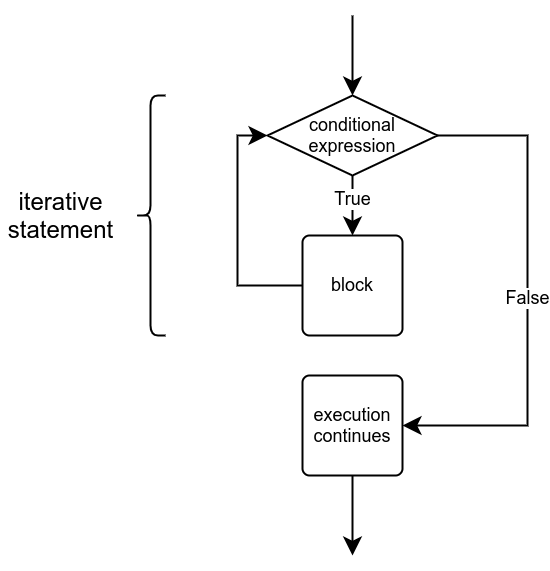
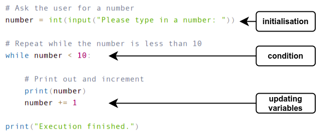
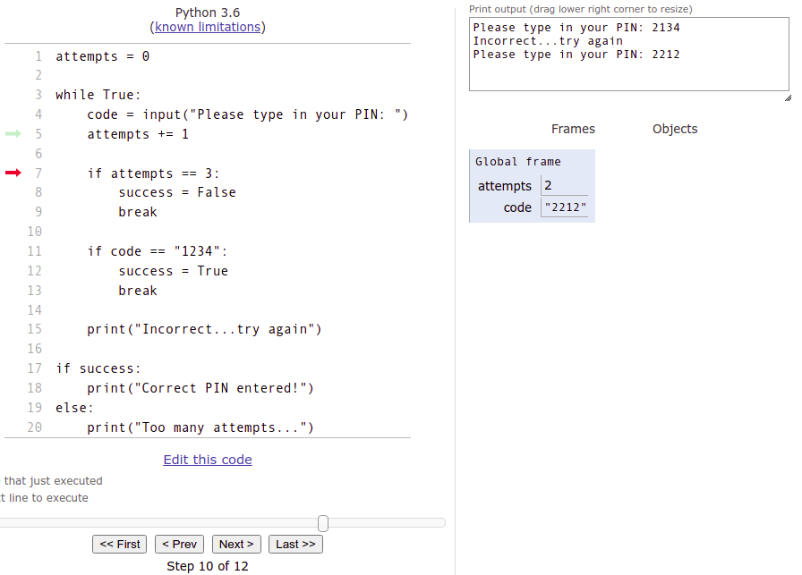

In the previous section we learnt to use the while True loop to repeat sections of code. In that construction the condition of the loop is True, so the condition is fulfilled every time. We needed to explicitly break out from the loop each time to avoid an infinite loop. For example:
# Print numbers until the variable a equals 5
a = 1
while True:
print(a)
a += 1
if a == 5:
break
Of course, the condition doesn’t always have to be True, but instead any Boolean expression can be used as the condition. The general structure of the while statement is as follows:
while <condition>:
<block>
The idea here is that the execution goes back and forth, checking if the condition is true and executing the code within the block, over and over again. If the condition at any point is false, execution of the program continues from the line after the while block.

In the following loop we have the condition number < 10. The block within the loop is executed only if the variable number is less than 10.
number = int(input("Please type in a number: "))
while number < 10:
print(number)
number += 1
print("Execution finished.")
This could print out:
In this structure the condition is always checked before the block within the loop is executed. It may happen that the block never gets executed, like so:
12 is not less than 10, so the program doesn’t print out a single number.
To create a loop you’ll often need to include three distinct steps: initialisation, condition, and updating the iteration variables.
Initialisation refers to setting the initial value(s) of the variable(s) used within the condition of the loop. These are often called the iteration or iterator variables. This is performed before the loop is first entered. The condition defines for how long the loop is to be executed. It is set out at the very beginning of the loop. Finally, within each repetition of the loop the variables involved in the condition are updated, so that each iteration brings the loop one step closer to its conclusion. The following image illustrates these steps:

If any one of these three components is missing, the loop will likely not function correctly. A typical error is omitting the update step:
number = 1
while number < 10:
print(number)
print("Execution finished.")
Here, the value of the variable number never changes. The program is stuck in an infinite loop, and the exact same bit of code is repeated over and over again until the user stops the execution, for example by pressing Control + C:
Any Boolean expression or combination thereof is a valid condition in a loop. For example, the following program prints out every third number, but only as long as the number is less than 100 and not divisible by 5:
number = int(input("Please type in a number: "))
while number < 100 and number % 5 != 0:
print(number)
number += 3
Two examples of the program’s execution with different inputs:
When the input is 28, the loop ends with the number 37, because the next number is 40, which is divisible by 5. When the input is 96, the loop ends with the number 99, because the next number is 102, which is not less than 100.
Whenever you write a loop you should make sure that the execution of the loop will always end at some point. The following program either finishes or doesn’t, depending on the input:
number = int(input("Please type in a number: "))
while number != 10:
print(number)
number += 2
If the input is an even number and equals 10 or less, the loop will terminate:
In any other case the loop gets executed endlessly, as there is no way the variable could then ever equal 10. For example 3 or 12 are inputs that would end in an infinite loop.
Imagine you are writing some slightly more complicated program, such as the one in the next exercise, Powers of two. The first efforts could look like this:
limit = int(input("Upper limit:"))
number = 1
while number == limit:
# more code
Here the program starts with reading the input, and continues with the outline of the loop and some attempt at a condition.
It is likely the code will not work as desired on the first try. It might have to be tested dozens or even hundreds of times before it works correctly.
This bit of code always asks for input from the user, which makes testing it slow and cumbersome. Each time the program is tested, input must be typed in.
One way around this is “hard-coding” the input while testing:
# let's hard-code the input value for testing
limit = 8 # int(input("Upper limit"))
number = 1
while number == limit:
# more code
When the program works with the one hard-coded input, it is easy to test it with other hard-coded inputs as well. When it seems to work correctly all round, it can be tested with input from the user.
This trick works with many of the tests that the exercises on this course are graded with. If the test tells you that the program works incorrectly when the input is, say, 42, that input can be hard-coded into the program while you look for the source of the bug:
# the test said the program works incorrectly when the input is 42
limit = 42 # int(input("Upper limit"))
number = 1
while number == limit:
# more code
Print statement debugging was mentioned a few times in the previous part of the course. The programs you are asked to write will become more and more complex as the course advances. The amount of debugging you will have to do will likely increase accordingly. Common causes for bugs lie in the conditions that terminate loops; they may work correctly for some inputs and fail for others, and it is not always obvious why that is.
That is why it is high time you included print statement debugging in your programming practices, if you haven’t done so already. You can find debugging instructions in the first and the fourth section of the previous part.
Besides print statements, there are many other tools that can be used for debugging. One of these is the visualisation tool on the Python Tutor website. The tool allows you to execute your code line by line, and also shows you the values stored in variables at each step.
The slightly broken code from the debugging example in the previous section is visualised with Python Tutor in the following image:

The red arrow points to where the execution of the program is at the moment. The tool displays what has been printed out so far, and also shows the value each variable has at each step. The execution moves forward line by line as you press Next.
All you need to do to use the visualisation tool is to copy your code and paste it into the code window of the tool. The tool does have some limitations compared to the version of Python used on this course. If you come across any cryptic error messages, it may be better to try some other debugging method.
More experienced programmers are rarely heavy users of the visualisation tool, but for a beginner it can be a valuable aid. Programming as a discipline has little room for luck or chance. It is essential that a programmer understands what values are created by their code at any given moment in the execution. If the values stored in variables are not as expected, there is most likely a bug in the program.
The visualisation tool and debugging print statements are both great ways for a programmer to see with their own eyes that a program does exactly what was expected of it.
In the very first week of the course we learnt that it is possible to “build” strings out of shorter strings with the + operator. For example, this is valid Python code:
words = "pride"
words = words + ", prejudice"
words = words + " and python"
print(words)
The += operator allows us to write this a little more compactly:
words = "pride"
words += ", prejudice"
words += " and python"
print(words)
This also applies to f-strings, which may come in handy if values stored in variables are needed as parts of the resulting string. For example this would work:
course = "Introduction to Programming"
grade = 4
verdict = "You have received "
verdict += f"the grade {grade} "
verdict += f"from the course {course}"
print(verdict)
In the previous exercise you calculated the sum of consecutive numbers by always adding a new value inside a loop.
The exact same idea applies to strings as well: you can add new parts to a string within a loop. This technique should be useful in the following exercise.